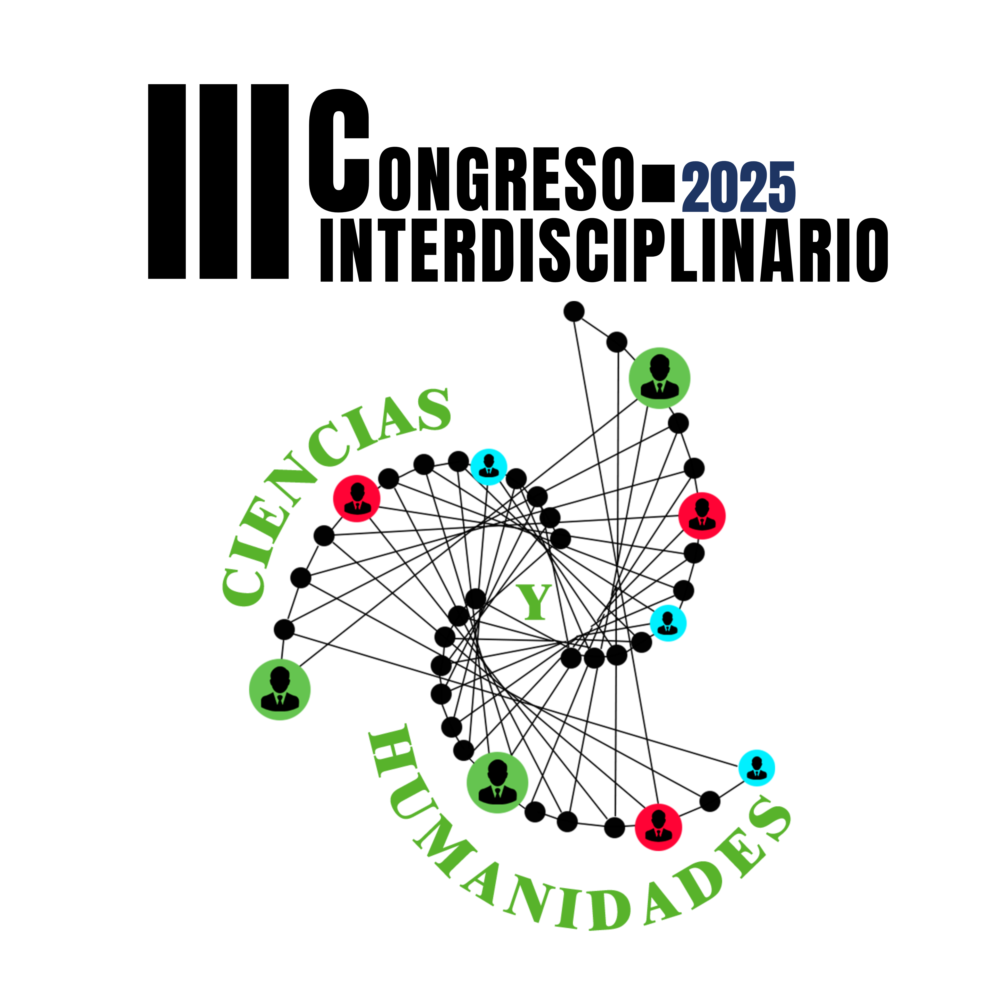

Instituto Tecnológico de Chetumal · Quintana Roo, México
12 al 14 de noviembre de 2025

INSTITUTO TECNOLÓGICO DE CHETUMAL
12-14 noviembre 2025
Modalidad Híbrida
Fecha límite para el pago de cuota de recuperación: 27 de septiembre de 2025.
Bienvenidos al III CONGRESO INTERDISCIPLINARIO EN CIENCIAS Y HUMANIDADES organizado por el Instituto Tecnológico de Chetumal que se realizará del 12 al 14 de noviembre de 2025. Podrán participar investigadores, docentes, profesionistas, estudiantes, y toda persona dedicada a la investigación y desarrollo tecnológico en Instituciones de Educación Superior públicas y privadas, centros de investigación, laboratorios, dependencias de gobierno y empresas particulares, a presentar sus trabajos de investigación en modalidad de ponencia oral presencial, oral virtual o cartel presencial.
Los autores(as) podrán optar por postular su trabajo a publicación, previo arbitraje, en la Revista AvaCient Volumen V Número III EDICIÓN ESPECIAL, Jul-Dic 2025 ISSN 2992-8567, editada por el Tecnológico Nacional de México/Instituto Tecnológico de Chetumal.